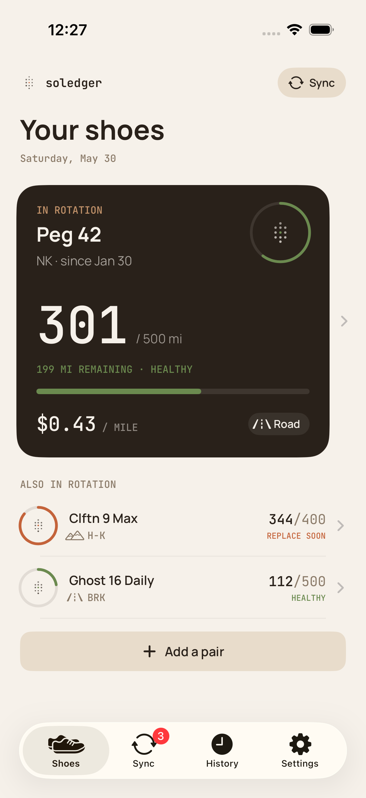
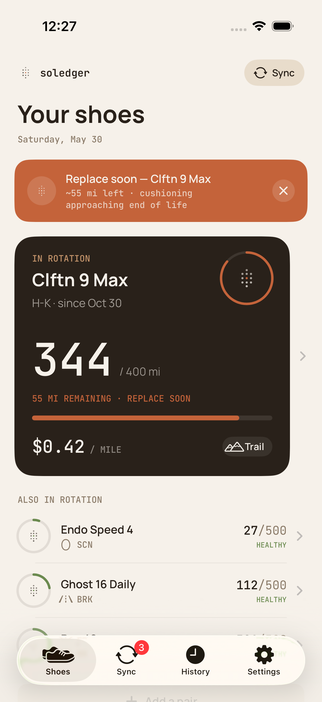
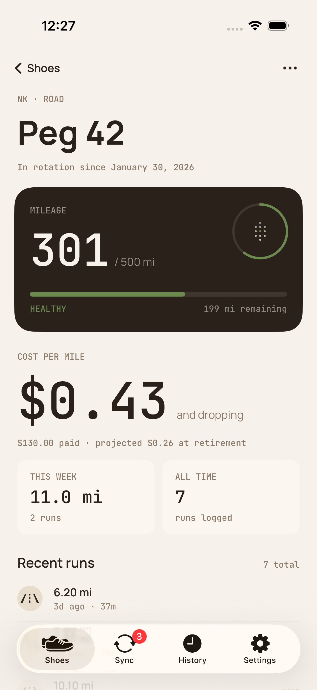
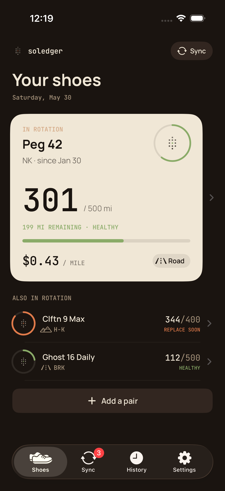

312mi
Total tracked
Soledger keeps a ledger for your soles. Every run goes on the books — so you know exactly when to retire a pair, and what each mile actually cost.

Most run apps want to be your coach. Soledger only wants to be the ledger — a calm record of what you ran, in which shoes, and what it cost you.
Your runs already live in Apple Health. Soledger reads them — road, trail, treadmill, track — and asks one thing: which shoes were on your feet?
Enter what you paid. Soledger does the math on every run. $0.32 / mi on the Pegasus, $0.71 on the carbon plate. Now you know.
At 85% of a shoe's lifetime, Soledger turns the dial from quiet green to a warm amber — replace soon. No buzzwords, no streaks, no celebration. Just the number, on time.
No accounts. No analytics. No cloud sync, no leaderboards. Your shoes and your runs live on your iPhone, full stop. We don't have a server because we don't want your data.
Numbers do the heavy lifting. Color carries meaning — a quiet green when shoes are healthy, a warm amber when it's time to replace.



Open the app, add a pair of shoes, run. Soledger does the bookkeeping in the background.
Brand, model, what you paid, where you run them. Set the expected lifetime. Soledger starts with a science-backed default — adjust it to whatever your legs and the rubber agree on.
Soledger reads the run from Apple Health and asks: which shoes? One tap and the mileage is on the books. Bulk-assign older runs in a single sync review.
A quiet green ring while you've got life left. A warm amber when it's time to replace. The shoe earns its mileage; you see what it cost.